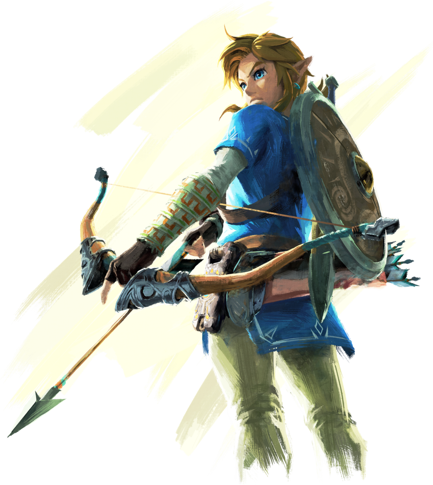
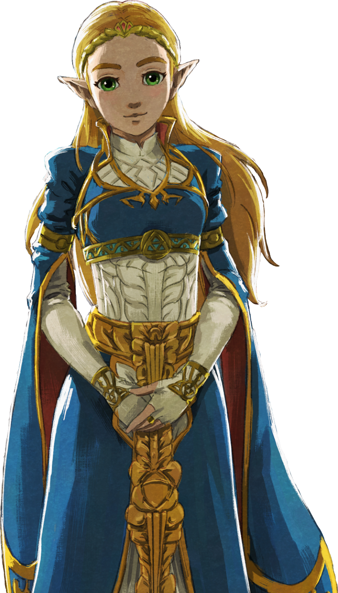
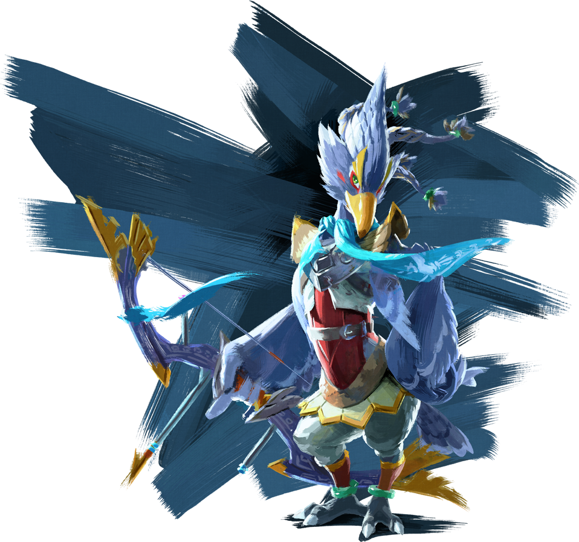
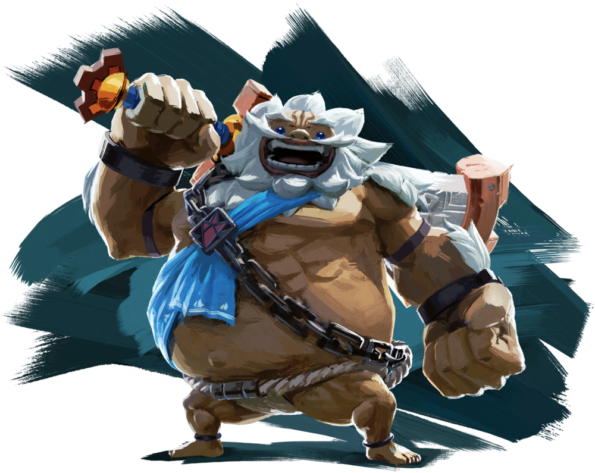
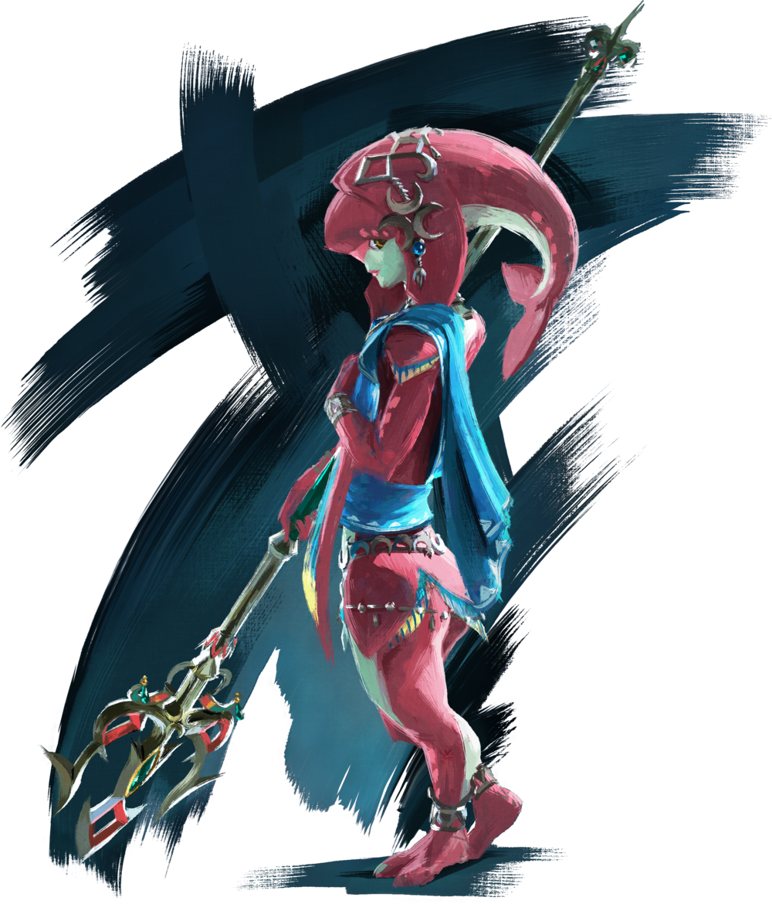
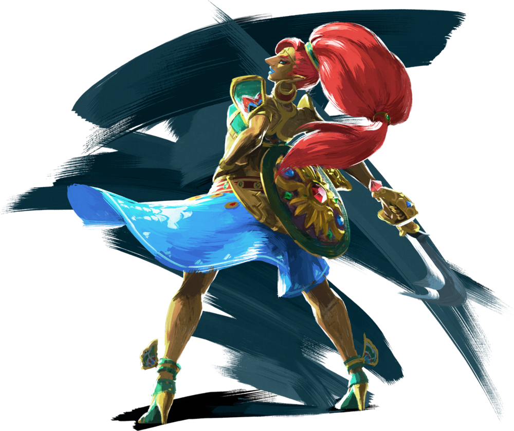
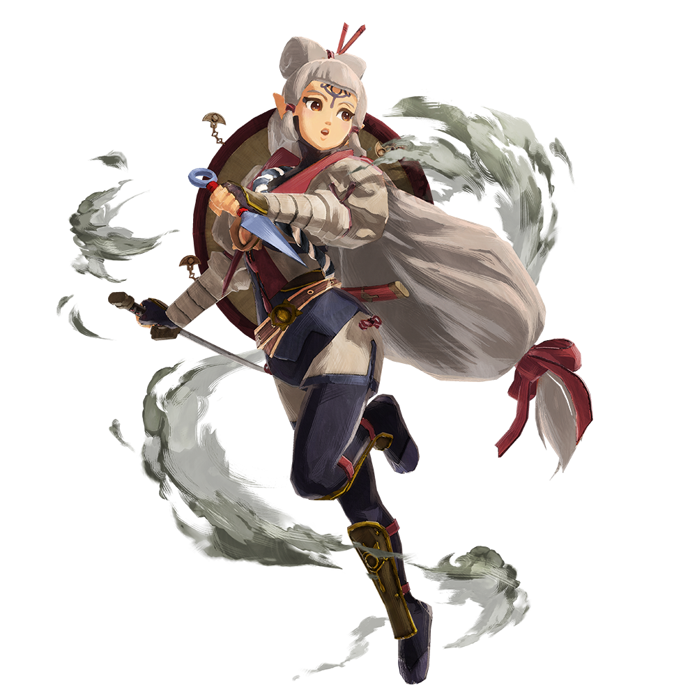
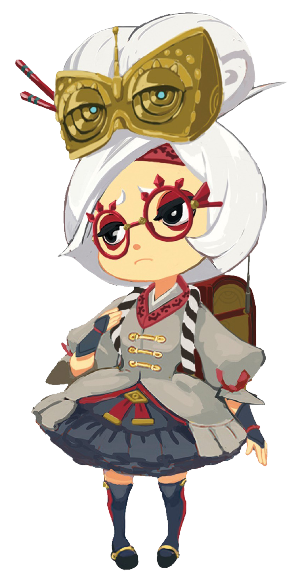
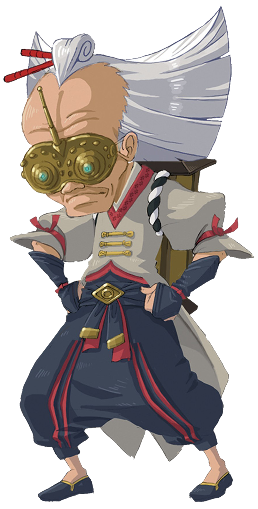

Personajes
Link
Este Link proviene de 100 años antes de los sucesos de Breath of the Wild. Perteneciendo originalmente al grupo de los Caballeros de Hyrule, el Rey Rhoam necesitaba a un nuevo héroe elegido por la Espada Maestra, pues él sabía que Ganon, el Cataclismo regresaría muy pronto. Así que Link fue elegido para que la Familia real de Hyrule esté preparada para la llegada de Ganon y pueda pelear junto con otros guerreros dotados conocidos como los Elegidos que estarían encargados de pilotar las Bestias Divinas. Link, también sería elegido como el guardaespaldas de la Princesa Zelda, pues ella no había despertado sus poderes divinos aún y tenía que hacerlo en un ambiente seguro, aunque agobiara a la Princesa Zelda, ya que ella cree que Link es muy superior a ella. Después de eso, se llevó a cabo una ceremonia con todos lo Elegidos reunidos.
Zelda
En Breath of the Wild, Zelda es una de las compañeras de Link junto con Mipha, Revali, Daruk y Urbosa, formando todos estos el grupo de los Elegidos. Su misión era mantener el sello de Ganon para proteger a Hyrule, hasta que este se libera y como Link queda malherido en la batalla de Hatelia, Zelda lo lleva al Santuario de la vida y lo pone a dormir durante 100 años, hasta que finalmente despierta para encontrarse con un Hyrule en ruinas y sin rastro de los Elegidos. En este momento, Zelda sigue viva por razones desconocidas mientras contiene a Ganon además aparece a menudo en los recuerdos de Link.
Ganondorf
Cien años antes de los acontecimientos del juego, Ganon apareció de forma súbita en Hyrule causando destrucción y la muerte de muchos inocentes. Debido a que no hubo nadie capaz de derrotarlo, se optó por
sellarlo en el propio Castillo de Hyrule. Esto causó que durante el siglo siguiente el reino cayese en decadencia, siendo retomado en su mayoría por la vegetación y naturaleza y quedando en ruinas. Cien años después de
que Ganon fuese sellado, la barrera que lo aprisionaba comienza a debilitarse, amenazando con el regreso de tanta destrucción.
Por ello, Link despierta de un letargo de un siglo y se dirige al Castillo de Hyrule para acabar con Ganon, quien ha adoptado la forma de una densa niebla negra y roja, teniendo parte de ella la forma de una gigantesca
cabeza de jabalí.
Revali
Revali es un Orni que confía mucho en sus habilidades, tanto que no tiene miedo a decir que superan a las del mismo Link, como se muestra en el recuerdo que tiene el protagonista en la misión "Las Cuatro Bestias Divinas ", en el Poblado Orni, al ver la Plaza Revali. También se atreve a desafiarlo en un combate, aunque este desafío sólo es una forma de burlarse de él por su incapacidad para volar. Parece sentir algún tipo de frustración por considerar que se mantiene en un segundo plano en la lucha contra Ganon, siendo sólo un apoyo para el héroe. Sin embargo, cuando Link libera su espíritu del interior de Vah Medoh, reconoce en su soledad que el Hyliano lo ha superado con creces y que él será quien salve a Hyrule.
Daruk
Daruk (ダルケル, Darukeru ?) es un personaje que aparece en The Legend of Zelda: Breath of the Wild. Es un guerrero de la tribu Goron. Según la descripción brindada por la revista Famitsū habita en las montañas de Hyrule. Siempre es amigable y tranquilo, pero en una batalla se convierte en un valiente y bravo guerrero que arrasa con todos sus enemigos mientras emite un gran grito que los aterra y que los vuelve estúpidos y cobardes. Se cree que es el Patriarca de los Goron.
Mypha
Mipha es la princesa de los zora, amiga de Link y una de los Elegidos. Es descrita como introvertida y posee el don de la curación. Mipha estaba enamorada de Link e hizo para él la armadura Zora antes de su muerte durante el Cataclismo. Una vez, Mipha y Link lucharon contra el centaleón del monte trueno, y Link acabó con él con un Ataque Circular. Mipha se impresionó e hizo una representación de cómo Link acabó con el centaleón, practicando el ataque circular con su tridente. Mientras que su padre y su hermano eran conscientes de sus sentimientos por el caballero hyliano, ella los mantuvo en secreto para su mentor Muzun, debido a su odio hacia los Hylianos. Link recibe esta armadura posteriormente del padre de Mipha, el rey Dorphan.
Urbosa
Antes de los acontecimientos del juego, Urbosa vivió en la Ciudadela Gerudo con otras de su raza, considerada una poderosa guerrera de impecable habilidad, fuerza y velocidad. Era amiga de la madre de Zelda. Luego fue elegida por el Rey Rhoam y la princesa Zelda para convertirse en la Elegida Gerudo, y piloto de la Bestia Divina Vah Naboris como protectora de Hyrule. Justo después de aceptar la petición de Zelda, derrotó a unos Miembros del clan Yiga que intentaron asesinarlas, demostrando su rapidez y fuerza, incluso haciendo una Guardia perfecta y electrocutando a uno de los miembros. Fue capaz de utilizar el poder de la Bestia Divina con relativa facilidad. Sin embargo, Urbosa fue asesinada por la Ira del Rayo de Ganon, quien la derrotó al ser mucho más fuerte y rápida que ella, durante el Cataclismo. Su espíritu fue entonces atrapado dentro de la Bestia Divina durante los próximos cien años. Su espíritu queda libre cuando Link mata al demonio dentro de la Bestia Divina.
Impa
Impa (インパ, Inpa ?, Hylian I.pngHylian M.pngHylian P.pngHylian A.png en Hylian) es uno de los personajes más recurrentes en la saga de The Legend of Zelda. Ella por lo general es la niñera o guardaespaldas de la Princesa Zelda, guardando por ello una relación muy estrecha con la Familia Real. Además, con frecuencia ayuda a Link guiándolo en algún punto de su aventura. Impa en la saga de The Legend of Zelda es la única confirmada como verdadera Sheikah, además de Prunia, Pay y Rotver; ya que Sheik es el álter ego de la Princesa Zelda y los otros personajes teorizados como Sheikah no son confirmados por Nintendo.
Prunia
Prunia (Purah en inglés) es un personaje que aparece en The Legend of Zelda: Breath of the Wild. Prunia es una Sheikah que puede ser encontrada en Aldea Hatelia, concretamente en el laboratorio de Hatelia, donde experimenta con tecnología Sheikah con su asistente Symon. A pesar de su apariencia, es la hermana mayor de Impa.
Rotver
Rotver (Robbie en inglés) es un personaje que aparece en The Legend of Zelda: Breath of the Wild. Rotver es un Sheikah que vive en el laboratorio de Akkala, donde experimenta con tecnología Sheikah. Después de completar la misión secundaria "Habla con Rotver ", él se encargará de elaborarle a Link personalmente equipamiento ancestral a cambio de rupias y materiales ancestrales.
